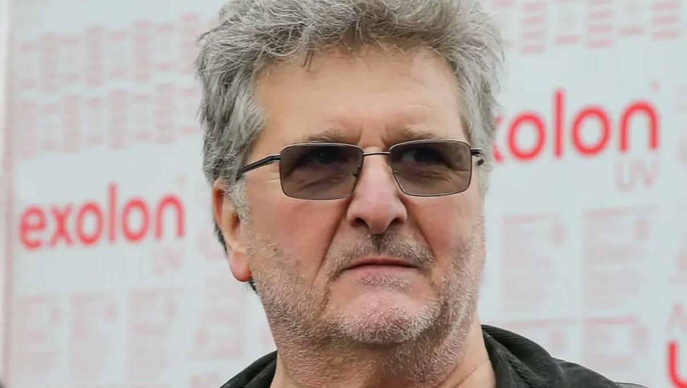
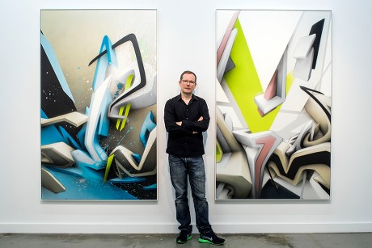
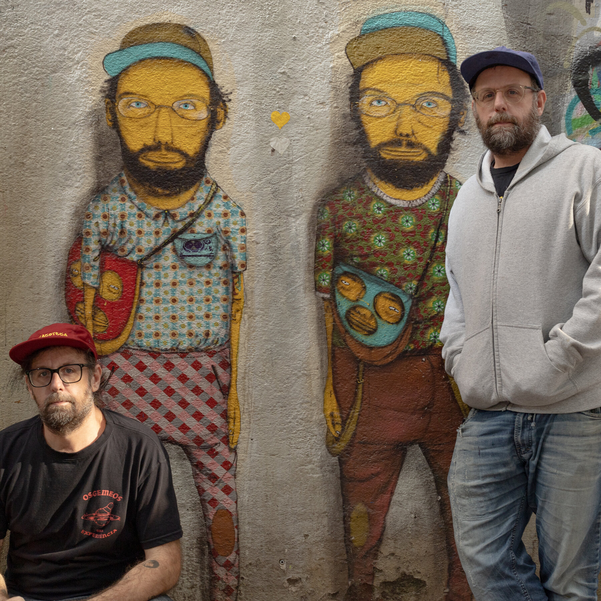
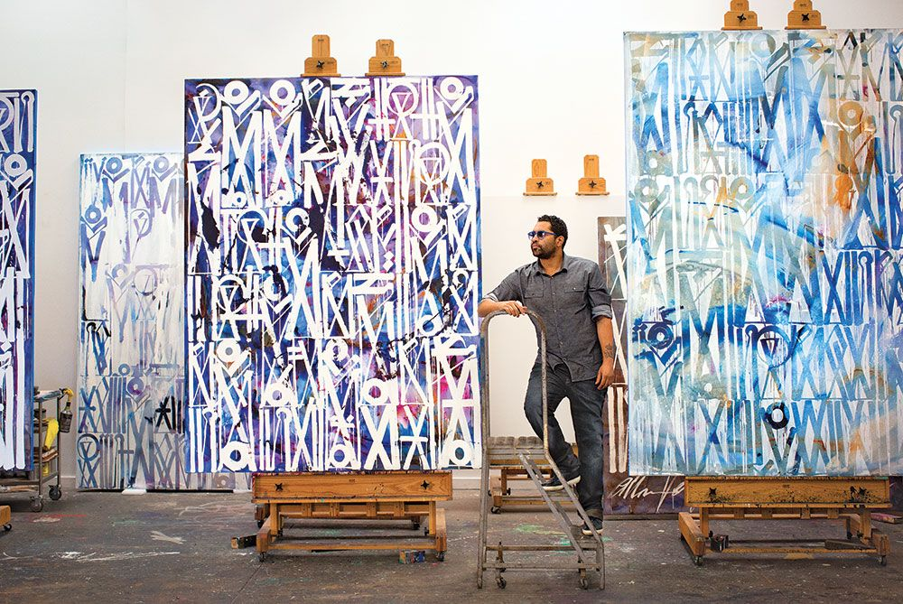
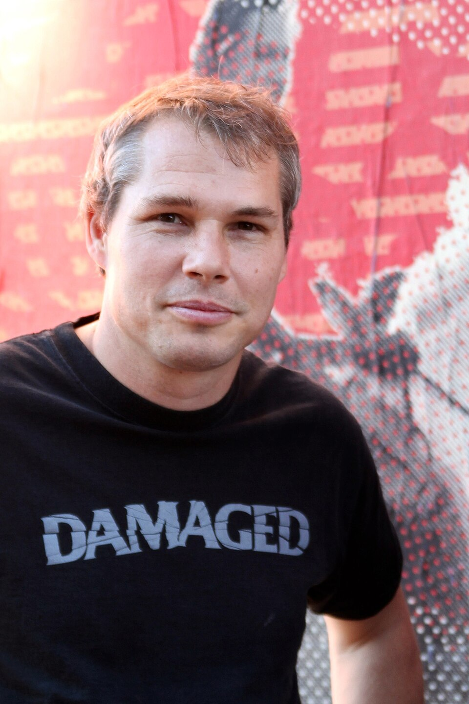
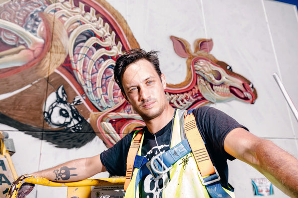

Artista anónimo británico, famoso por sus obras políticas con estarcido en calles de todo el mundo.

Maestro alemán del graffiti 3D. Sus letras parecen literalmente salir de la pared.

Hermanos brasileños reconocibles por sus peculiares personajes amarillos en murales gigantes.

Artista de Los Ángeles con un lenguaje visual único inspirado en jeroglíficos y caligrafía antigua.

Creador del icónico póster "Hope" de Obama. Fusiona arte callejero con diseño gráfico político.

Austriaco especialista en disecciones visuales de personajes. Su estilo es único y visceral.